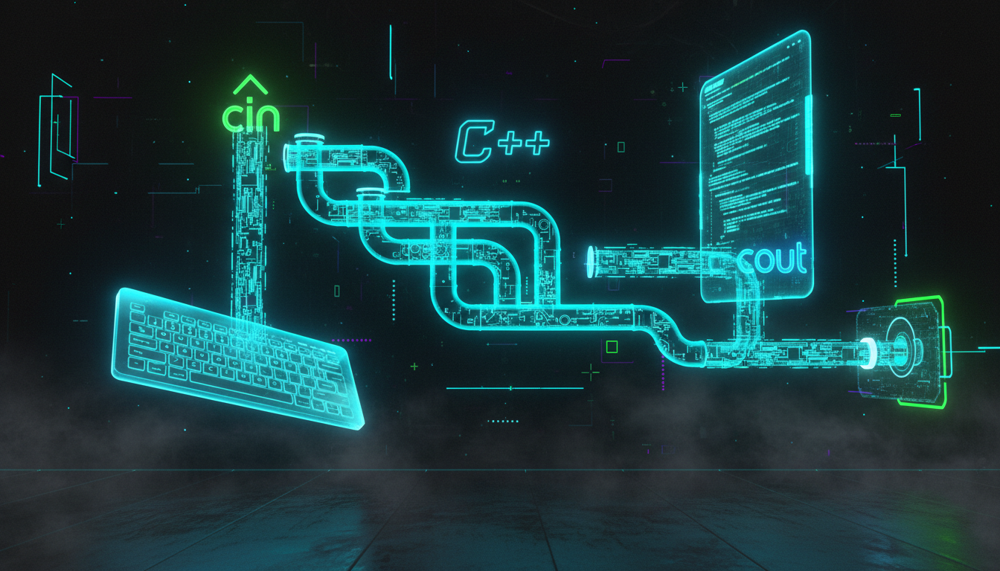

Робота з cin, cout, форматоване введення/виведення, маніпулятори

Рис. 5.1 — Потоки введення та виведення в C++
C++ використовує потокову модель введення/виведення (stream I/O). Потік — це абстракція послідовності даних. Бібліотека <iostream> надає три стандартні потоки:
| Потік | Тип | Призначення | Пристрій |
|---|---|---|---|
| std::cin | istream | Стандартне введення | Клавіатура |
| std::cout | ostream | Стандартне виведення | Екран |
| std::cerr | ostream | Стандартна помилка | Екран (без буферизації) |
| std::clog | ostream | Стандартне логування | Екран (з буферизацією) |
Оператор << (insertion operator) вставляє дані у вихідний потік:
#include <iostream>
#include <string>
int main() {
int age = 25;
double pi = 3.14159;
char grade = 'A';
std::string name = "Ivan";
bool active = true;
std::cout << "Ім'я: " << name << std::endl;
std::cout << "Вік: " << age << std::endl;
std::cout << "Середній бал: " << grade << std::endl;
std::cout << "Число PI: " << pi << std::endl;
std::cout << "Активний: " << active << std::endl; // виведе 0 або 1
return 0;
}Оператор >> (extraction operator) зчитує дані з вхідного потоку:
#include <iostream>
#include <string>
int main() {
std::string name;
int age;
double height;
std::cout << "Введіть ім'я: ";
std::cin >> name; // зчитує до пробілу
std::cout << "Введіть вік: ";
std::cin >> age; // зчитує ціле число
std::cout << "Введіть зріст (м): ";
std::cin >> height; // зчитує дробове число
std::cout << name << ", " << age << " років, "
<< height << " м" << std::endl;
return 0;
}Маніпулятори керують форматом виведення даних:
#include <iostream>
#include <iomanip> // для маніпуляторів
int main() {
double pi = 3.14159265359;
int num = 42;
// Ширина поля
std::cout << "|" << std::setw(10) << num << "|" << std::endl;
// Виведе: | 42|
// Точність для дробових чисел
std::cout << std::setprecision(4) << pi << std::endl;
// Виведе: 3.142
// Фіксована нотація
std::cout << std::fixed << std::setprecision(2) << pi << std::endl;
// Виведе: 3.14
// Наукова нотація
std::cout << std::scientific << pi << std::endl;
// Виведе: 3.14e+00
// Вирівнювання
std::cout << std::left << std::setw(10) << "Left" << "|" << std::endl;
std::cout << std::right << std::setw(10) << "Right" << "|" << std::endl;
// Заповнення символом
std::cout << std::setfill('*') << std::setw(10) << num << std::endl;
// Виведе: ********42
// Шістнадцятковий формат
std::cout << std::hex << num << std::endl; // 2a
std::cout << std::uppercase << num << std::endl; // 2A
std::cout << std::showbase << num << std::endl; // 0x2A
// Повернення у десятковий формат
std::cout << std::dec << num << std::endl;
return 0;
}#include <iostream>
#include <string>
int main() {
std::string fullName;
// cin >> зчитує лише до пробілу!
std::cout << "Введіть повне ім'я: ";
std::cin >> fullName; // Якщо ввести "Ivan Petrov", зчитає лише "Ivan"
// Очищення буфера
std::cin.ignore(1000, '\n');
// getline зчитує весь рядок включно з пробілами
std::cout << "Введіть повне ім'я ще раз: ";
std::getline(std::cin, fullName); // Зчитає "Ivan Petrov"
std::cout << "Привіт, " << fullName << "!" << std::endl;
return 0;
}#include <iostream>
#include <limits>
int main() {
int number;
std::cout << "Введіть ціле число: ";
// Перевірка чи введення успішне
if (!(std::cin >> number)) {
std::cout << "Помилка! Це не ціле число." << std::endl;
// Очищення стану помилки
std::cin.clear();
// Очищення буфера введення
std::cin.ignore(std::numeric_limits<std::streamsize>::max(), '\n');
} else {
std::cout << "Ви ввели: " << number << std::endl;
}
return 0;
}